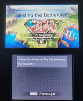
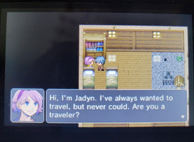
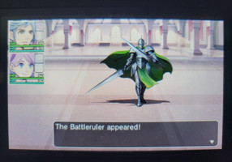
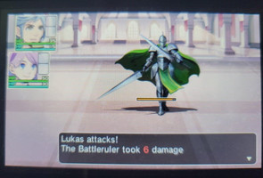

Developer Logs for Lunar Labor Studios
March 28, 2022
Patch notes for The Ruby Pendant Version 2.0!
The Music Update!
- New Title Screen & itch.io Cover Photo
- Edited Credits
- Edited Graphics for "Kate & Cathy's Neighborhood" Map
- The addition of the "Jukebox"! Now you can listen to all your favorite songs in The Ruby Pendant both on the Title Screen, and in the in-game menu!
March 14, 2022
Patch Notes for The Ruby Pendant Version 1.3!
- Added secret treasure chest
- Replaced certain FINAL FANTASY VII songs to Copyright Free songs
March 5, 2022
Another new addition to Other Miscellaneous Projects
After a week of hard work, another project is being added to Cathy's Other Miscellaneous Projects! Inspired by the Mock Fan-Made AP Exams of Cooperboard, Cathy has made her own exam about Super Smash Bros. Ultimate! You can download the entire .zip file for all the files you'd need if you wanted to take the Exam for real, or if you wanted to test your friends.
For a more convenient way to take the exam, she has a Google Form available, however due to Google Form limitations, it is less refined than the pdfs.
Exam Link
If you'd like for her to grade your exam, use the "Contact Us" form with the subject "AP Super Smash Bros. Ultimate Score" and your name so she knows which exam was yours.
March 1, 2022
New addition to Other Miscellaneous Projects
Quoted directly from the Other Miscellaneous Projects page:
"Project #3: Super Smash Bros. Ultimate Science: Bahamut ZERO - I break down the math behind the Legend Spirit of the FINAL FANTASY VII Spirit Board."
February 28, 2022
Developer Log 2/28/2022
Hello everyone, Cathy Nekonin here! Time for another update about how I'm doing and what projects I'm up to.
Right now, I just found out about the AP Minecraft Exam, and so long story short, my friends are taking it while I'm proctoring and grading it, so that's fun (that's not sarcastic, I just find stuff like that fun). I'm also a menace to society, so I've decided to write up my own AP Super Smash Bros. Ultimate Exam because why not? Don't worry, I'll upload the exam to Other Miscellaneous Projects so it'll count for something.
I'm also dealing with filling out scholarships, college work, high school work, and actual work, so I'm pretty busy these days. Don't worry, I'm always thinking of new ideas for games, so while it may look like I'm dormant on the video game front, I'm working as busy as a beaver!
Regarding my itch.io page, the next project I'm planning is an update to Besting the Battleruler REMAKE. I don't want to promise anything, but it's planned to be an extended dungeon and a sound test room to listen to the music in the game.
Until next time!
~Cathy Nekonin
February 14, 2022
Developer Log 2/14/2022
Happy Valentines' day everyone! Cathy Nekonin here, with a little update about the next few months regarding project development.
Right now, I am 17 years old, so a lot of stuff has been coming at me that I need to manage, like school, college, scholarships, clubs, etc. That said, I'm still trying to come up with ideas for my next projects!
I may have a little something for my Other Miscellaneous Projects tab coming up soon, but I don't want to promise anything. I hope once the summer arrives I'll be able to make more projects, and at a faster rate.
Thank you for reading this far! Have a great rest of your day!
~Cathy Nekonin
January 9, 2022
Besting the Battleruler (3DS Version)
For those who still have a 3DS (or any of the 3DS family, for that matter), you can play the original Besting the Battleruler! Just download the RPG Maker Fes Player from the eShop in order to play it. Once you have it downloaded, open it and click the start button. After clicking start, click "network". Click "download posted product" and then " Search Product ID". You should then be prompted to enter a code, in which you would enter "18x1inf7". After entering the code, you should have access to Besting the Battleruler (3DS)!
Video Tutorial



